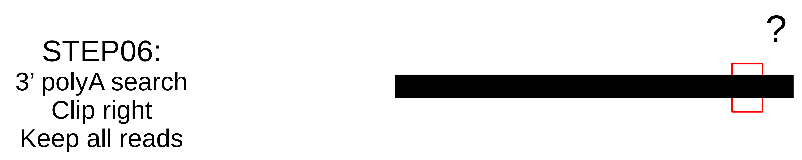

Modules description¶
ReadSoustraction¶
ReadSoustraction module use bowtie2 to map reads against a reference. The output is directly piped to samtools for bam convertion and again piped to samtools to select unmapped paired reads (-f 12 -F 256). The pipe continues with bamtofastq tool to create two fastq files (r1 and r2).
def _create_cmd (self):
cmd = ''
cmd += self.params['bin']['bowtie'] + ' -p ' + str(self.n_cpu)
cmd += ' -x ' + self.db
cmd += ' -1 ' + self.i1 + ' -2 ' + self.i2 + ' | '
cmd += self.params['bin']['samtools'] + ' view -bS - '
cmd += ' | ' + self.params['bin']['samtools'] + ' view -u -f 12 -F 256 - | ' + self.params['bin']['bedtools'] + ' bamtofastq -i - -fq ' + self.o1 + ' -fq2 ' + self.o2
log.debug(cmd)
return cmd
Options¶
i1: R1 fastq file. [mandatory]i2: R2 fastq file. [mandatory]db: Bowtie database.o1: R1 output fastq file.o2: R2 output fastq file.sge: [BOOL]n_cpu: [INT] Number of CPU to use.iter: [SampleID]
Demultiplex¶

Warning: This demultiplex procedure is specifc to our sequencing methods.
The demultiplex.pl script uses cutadapt to demultiplex and trim step by step sequences used by the sequencing technology and the dsRNA extraction protocol.
Our extraction and sequencing protocol:
Informations about indexes, common sequences, and sample ids are stored in the map.txt file which must be tab delimited file. The script produce lots of temporary file (*_step_*) that can be deleted at the end of the execution. Each step produce 3 type of files:
- .info:
- the matching information.
- .log:
- the execution information.
- .out:
- the fastq file.
Options¶
i1: R1 fastq file. [mandatory]i2: R2 fastq file. [mandatory]adapters: Fasta file of adapters.middle: Check for MIDs in middle of the reads and 1 : trim the reads or 2: exclude the read.min_qual: Trim the read if the quality is below this threshold.polyA: Trim poly-A tail.min_len: Exclude reads under this size threshold.iter: [SampleID]
Step 01: 5’ index search¶

_launchCutAdapt($self,$files->{1}, $self->{index}, $tmp_file_prefix . "_step.01_R1",'d','k','-g','0','1','0.8');
'd','k': This step discard untrimmed reads, so reads that do not contain indexes are excluded, and keep trimmed reads.'-g': search indexes in 5’.'0': no errors allowed in the index sequence.'1': search for one index in each read.'0.8': 80% of the index length to be considered as a match.
Step 02: 5’ common sequence¶
{kind=link}
_launchCutAdapt($self,$files->{1},$self->{_common},$tmp_file_prefix . "_step.02_R1",'k','k','-g','0.1',scalar(keys(%{$self->{_common}})),'0.7');
'k','k': Keep reads that contains or not the common part.'-g': search in 5’ part.'0.1': 10% of sequencing errors.scalar(keys(%{$self->{_common}})): will search as many common part as provided.'0.7': 70% of the common part length to be considered as a match.
Step 03: 5’ common sequence fragments¶

_launchCutAdapt($self,$files->{1},$self->{_common},$tmp_file_prefix . "_step.021_R1",'k','k','-g','0.2',scalar(keys(%{$self->{_common}})),'0.5');
'k','k': Keep reads that contains or not the common part.'-g': search in 5’ part.'0.2': 20% of sequencing errors.scalar(keys(%{$self->{_common}})): will search as many common part as provided.'0.5': 50% of the common part length to be considered as a match.
Step 04: Trimming sequencing adapters¶

_launchCutAdapt($self,$files->{1},$self->{illuminaAdapter},$tmp_file_prefix . "_step.03_R1",'k','k','-b','0.2',scalar(keys(%{$self->{illuminaAdapter}})),'0.6');
'k','k': Keep reads that contains or not the common part.'-b': search adapters anywhere in the read.'0.2': 20% of sequencing errors.scalar(keys(%{$self->{illuminaAdapter}})): will search as many adapters as provided.'0.6': 60% of the adapters length to be considered as a match.
Step 05: Search for hybrid reads¶

This step is really specific to our extraction method since very short DNA fragment can be link together during the aspecific adapters ligation step of the Illumina kits. This creating reads composed of two different PCR product. Thus our program search for index sequence in the middle of the read and trim it to keep the 5’ part or exlude the read. The research is done both on provided indexes sequences and reverse complement of thoses sequences.
-middle [1|2] Search for common tag in the middle of the read. 1: trim the read. 2: exclude the read.
_launchCutAdapt($self,$files->{1},$h,$tmp_file_prefix . "_step.04_R1",'k','k','-b','0.1','1','0.5');
'k','k': Keep reads that contains or not the index , or'k','d'if the-middleoption is provided.'-b': search adapters anywhere in the read.'0.1': 20% of sequencing errors.'1': search for one index in each read.'0.5': 50% of the adapters length to be considered as a match.
Step 06: Search for polyA (optional)¶
{kind=link}
In Illumina technology, if the sequencing matrix is too short compared to the sequencing length, the sequencing machine adds a bunch of A’s and then radom sequence.
_launchCutAdapt($self,$files->{1}, $h, $tmp_file_prefix . "_step.05_R1",'k','k','-a','0','1','0.8');
'k','k': Keep reads that contains or not the index , or'k','d'if the-middleoption is provided.'-a': search in the 3’ end.'0': no sequencing errors.'1': search for one index in each read.'0.8': 80% of the polyA length to be considered as a match.
Assembly¶
This module can launch two assemblers, IDBA and MetaSpades.
Foreach assembler, the module convert reads files to the proper format, launch the assembly in a separate directory, rename scaffolds identifier and move results file to the sample root directory.
Options¶
Map¶
This module uses bowtie2, samtools and readPerContig.pl script to map reads back on the assembly and count for each scaffold the number of reads aligned resulting a simple two column file scaffoldID and nb_reads used by other modules.
Options¶
contigs: fasta file of contigs to map reads on. [mandatory]i1: R1 fastq file. [mandatory]i2: R2 fastq file. [mandatory]ising: singletons fastq filen_cpu: [INT] number of CPU to use.sge: [BOOL] use SGE scheduler.bam: BAM file name.rn: output file name.
Normalization¶
This module randomly select NUM reads from paired-files.
Options¶
i1: R1 fastq file. [mandatory]i2: R2 fastq file. [mandatory]o1: Output R1 normalized file. [mandatory]o2: Output R2 normalized file. [mandatory]num: [INT] Number of reads to randomly select. [mandatory]iter: Iteration on [sample, library].n_cpu: [INT] number of CPU to use.sge: [BOOL] use SGE scheduler.
Diamond¶
This module launches Diamond similarity search on reads and produce an XML file simalar to what Blast does so it can be treated by the Blast2ecsv module and so on.
Options¶
i1: R1 fastq file. [mandatory]i2: R2 fastq file. [mandatory]db: Values are defined in the parameters.yaml file. [mandatory]ising: singletons fastq filen_cpu: [INT] number of CPU to use.sge: [BOOL] use SGE scheduler.sensitive: [BOOL]more_sensitive: [BOOL]out: XML output filescore: Report matches above this score.max_target_seqs: Maximum match per query sequences.evalue: Min e-value.identity: Report matches above this identity percent. 0 > X > 100.qov: Query overlap.hov: Hit overlap.
Diamond2Blast¶
Options¶
i: CSV file with DIAMOND results. [mandatory]contigs: Fasta file. [mandatory]out: XML output file.type: Blast type. [‘tblastx’,’blastx’,’blastn’,’blastp’,’rpstblastn’]. [mandatory]db: Values are defined in the parameters.yaml file. [mandatory]evalue: Min e-value.server: [‘enki’,’genologin’,’avakas’] Values are defined in the parameters.yaml file.n_cpu: [INT] number of CPU to use.tc: Number of task launched at the same time on SGE.num_chunk: Number of chunks to split the original fasta file for parallel execution.max_target_seqs: Maximum match per query sequences.sge: [BOOL] use SGE scheduler.
Blast¶
This module launches all type of Blast on local machine or distant servers. This module has been developped for our own local machines and servers, but it can be easly modified to fit your needs.
This module mainly depends on the parameters.yaml file and the blast_launch.py script which has to be present on the server you want to use and modified to fit your server configuration.
Options¶
contigs: Fasta file. [mandatory]db: Values are defined in the parameters.yaml file. [mandatory]type: Blast type. [‘tblastx’,’blastx’,’blastn’,’blastp’,’rpstblastn’]. [mandatory]n_cpu: [INT] number of CPU to use.tc: Number of task launched at the same time on SGE. (Experimental, works on Genotoul)max_target_seqs: Maximum match per query sequences.num_chunk: Number of chunks to split the original fasta file for parallel execution.out: Output file name.server: [‘enki’,’genologin’,’avakas’] Values are defined in the parameters.yaml file.sge: [BOOL] use SGE scheduler.
This module is able to launch Blast instance on distant servers if the database and the blast_launch.py script is present on the server. Then you have to edit the parameters.yaml file to fit your configuration. The script has been developped to use two computer cluster, Avakas (PBS + Torque) and Genotoul (SGE) but each cluster has its own configuration so you may have to modify this script to adapt it to your configuration.
Blast2ecsv¶
This module parse Blast xml outputs, filter matches on different criteria and link Accession number to NCBI taxonomy.
Options¶
b: Blast file.if: Input format [‘xml’,’m8’]out: Output file name.evalue: Min e-value.fhit: Only report first hit.fhsp: Only report first hsp.pm:r: Reduced taxonomy. Report only 5 consistent rank.vs: Only report sequences when match is virus or viroids.rn: Read number. File created by the Map module.type: Blast type. [‘tblastx’,’blastx’,’blastn’,’blastp’,’rpstblastn’]score: Report matches above this score.identity: Report matches above this identity percent. 0 > X > 100.qov: Query overlap.hov: Hit overlap.pd: Parse description. Useful when the query ID is stored in the dscription field in the XML file.sge: [BOOL] use SGE scheduler.
Ecsv2excel¶
This module aggregates multiple ecsv file to create a colored XLSX file. It launches the ecsv2krona.pl script.
Options¶
b[INT]: CSV Blast file from 1 to 10.out: Outpuy file name.r: RPSBLAST csv file.sge: [BOOL] use SGE scheduler.
Ecsv2krona¶
This module launch the ecsv2krona.pl script. It will aggregate multiple ecsv file into one Krona html file.
Options¶
b: [INT] CSV Blast file.id: [INT] ID wanted corresponding to the Blast file.x: [INT] XML Blast file. If used, this file will be split by species and link in the Krona file.out: Output file name.data: [‘both’,’reads’,’contigs’,’none’]r: Use reduced taxonomy.c: [‘identity’,’taxid’,’none’]iter: [‘global’]sge: [BOOL] use SGE scheduler.
Rps2ecsv¶
This module launch rps2ecsv.pl script for each sample. This module parse XML files from rpsblast and create csv file as a result.
Options¶
b: RPSBLAST XML file.contigs: Fasta file.sge: [BOOL] use SGE scheduler.out: Output file name.evalue: e-value threshold.
Rps2tree¶
This module launch rps2tree.pl script for all sample provided. This module generates Operational Taxonomic Unit (OTU) based on RPS-Blast results. For each CDD motifs, contigs are clustered together based on matrix distance.
Options¶
pfam: CSV file from Rps2ecsv.contigs: Fasta file.ecsv: CSV file from Blast2ecsv.out: Output file name.sge: [BOOL]viral_portion: Minimum percentage of viral sequence in a domain to be selected.min_prot: Minimum protein length to be included in a tree.perc: Percentage of identity. Threshold set to define OTU.iter: [‘global’]